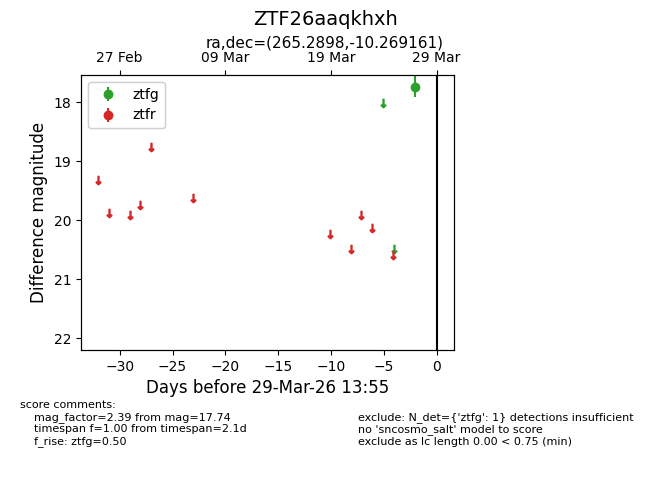
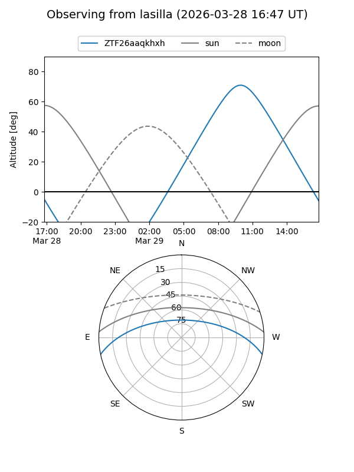
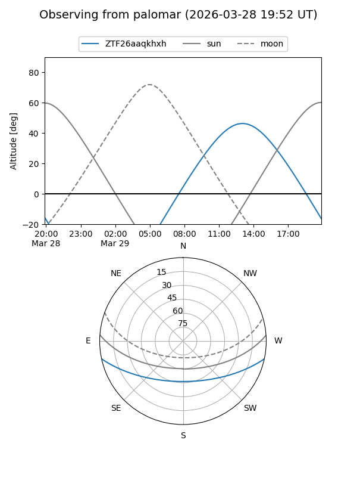

ZTF26aaqkhxh
Target ZTF26aaqkhxh at 2026-03-29 13:58
Aliases and brokers:
FINK: link
Lasair: link
ALeRCE: link
alt names
ZTF26aaqkhxh (ztf,fink_ztf)
Coordinates:
equatorial (ra, dec) = 265.2898,-10.26916
equatorial (HMS+DMS) = 17:41:09.56,-10:16:08.98
galactic (l, b) = (15.5250,+10.54823)
Flags:
Photometry:
last ztfg=17.74
1 ztfg detections
Lightcurve

Visibility


Additional plots